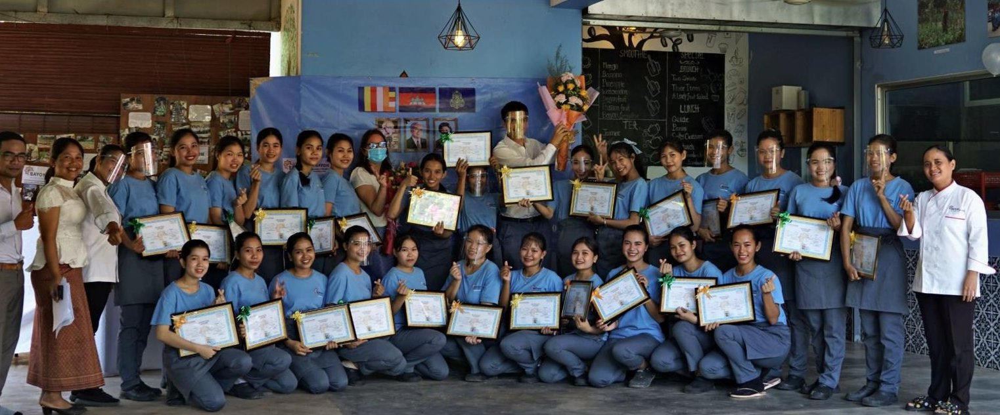

ทุนการศึกษาสำหรับนักเรียนที่ขาดแคลน
นักเรียนที่มีแนวโน้มจะประสบความสำเร็จมากที่สุด มักเป็นกลุ่มที่ใกล้จะถูกดึงออกจากโรงเรียนมากที่สุดเช่นกัน ทุนการศึกษาช่วยปิดช่องว่างนั้นได้โดยตรง

มัธยมศึกษาคือจุดที่ครอบครัวหมดทางเลือก
โดยทั่วไปการศึกษาระดับประถมยังพอมีกำลังจ่ายได้ หรืออย่างน้อยก็พอจัดการได้ สำหรับครอบครัวส่วนใหญ่ที่ Entraide Asia ทำงานด้วย แต่ระดับมัธยมศึกษาเปลี่ยนสมการนั้นไปโดยสิ้นเชิง ค่าเล่าเรียนสูงขึ้น การเดินทางยาวและมีค่าใช้จ่ายมากขึ้น และเด็กที่โตขึ้นก็ถึงวัยที่สามารถหารายได้แทนที่จะไปโรงเรียน นี่คือจุดที่นักเรียนที่มีความสามารถจำนวนมากต้องออกจากโรงเรียนอย่างถาวร
ทุนการศึกษาในช่วงนี้ไม่ได้เป็นเพียงการจ่ายค่าใช้จ่าย แต่ให้โอกาสครอบครัวได้เลือกการศึกษาแทนรายได้ทันที ทีละปี
ทุนการศึกษาครอบคลุมอะไรจริง ๆ บ้าง
ค่าเล่าเรียนและค่าธรรมเนียม
ค่าเล่าเรียนและค่าลงทะเบียนระดับมัธยมศึกษา และเมื่อนักเรียนมีคุณสมบัติ ค่าเล่าเรียนระดับมหาวิทยาลัย ที่จ่ายโดยตรงในแต่ละภาคเรียน
หนังสือและอุปกรณ์การเรียน
หนังสือเรียน อุปกรณ์เตรียมสอบ และค่าใช้จ่ายด้านวิชาการอื่น ๆ ที่เพิ่มขึ้นอย่างมากเมื่อนักเรียนถึงระดับมัธยมศึกษา
ค่าใช้จ่ายในชีวิตประจำวัน
เงินสมทบสำหรับอาหาร การเดินทาง และที่พัก สำหรับนักเรียนที่ต้องเดินทางไกลหรือพักอาศัยห่างจากบ้านเพื่อศึกษาต่อ
คัดเลือกด้วยตนเอง
นักเรียนถูกระบุผ่านการเยี่ยมชมโรงเรียนพันธมิตรโดยตรง โดยให้ความสำคัญกับผู้ที่มีความเสี่ยงจะออกจากโรงเรียนมากที่สุด แทนที่จะเป็นผู้ที่มีคะแนนสูงสุด

นักเรียนทุนถูกคัดเลือกผ่านการเยี่ยมชมโรงเรียนพันธมิตรโดยตรง ไม่ใช่ผ่านใบสมัครที่พิจารณาจากระยะไกล
Bayon School ประเทศกัมพูชา
การสนับสนุนของ Entraide Asia ที่ Bayon School ครอบคลุมค่าเล่าเรียน หนังสือ และค่าใช้จ่ายประจำวันสำหรับนักเรียนมัธยมประมาณ 400 คน ซึ่งหากไม่มีการสนับสนุนก็จะต้องเลือกระหว่างการไปเรียนกับการช่วยครอบครัวหาเลี้ยงชีพ — รูปแบบเดียวกับการสนับสนุนโดยตรงและอุปถัมภ์เป็นรายบุคคลที่ Christophe มอบให้แก่นักเรียนแต่ละคนในเมียนมา
ดูเรื่องราวฉบับเต็ม →
การสนับสนุนที่ติดตามตัวนักเรียน ไม่ใช่ตามปีการศึกษา
ทุนการศึกษาถูกจัดโครงสร้างให้เป็นข้อผูกพันระยะหลายปีเมื่อเป็นไปได้ เพราะเงินทุนเพียงหนึ่งปีมักไม่เปลี่ยนแปลงการคำนวณระยะยาวของครอบครัว Christophe ติดตามนักเรียนที่ได้รับทุนโดยตรง เพื่อให้การสนับสนุนดำเนินต่อไปตราบเท่าที่ยังจำเป็น แทนที่จะสิ้นสุดหลังจากหนึ่งภาคเรียน